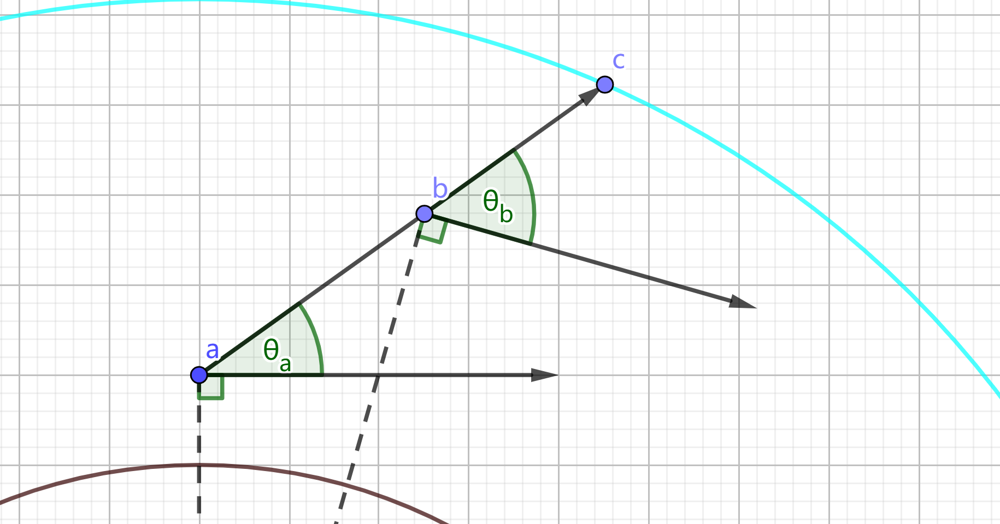
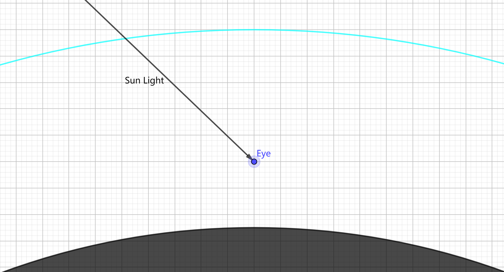
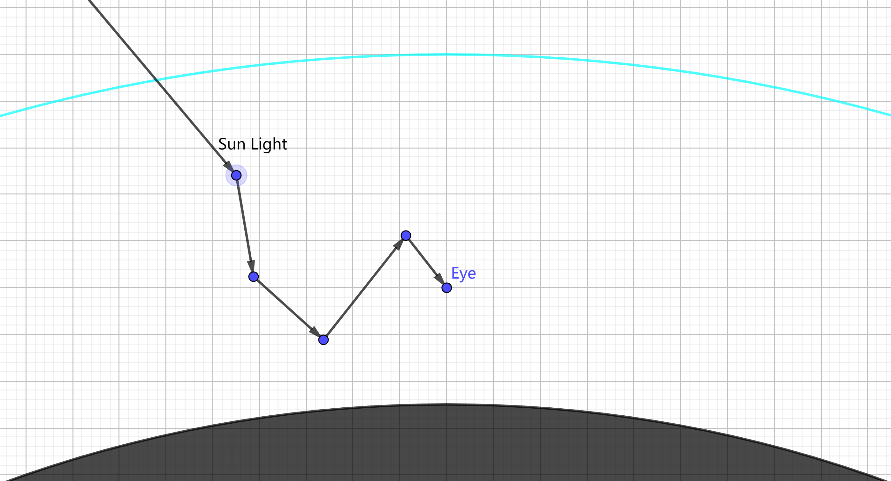
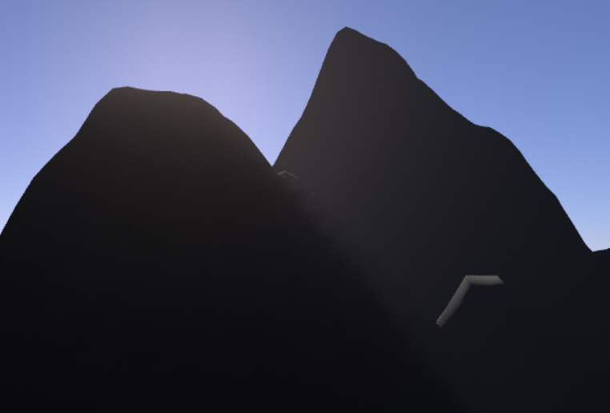
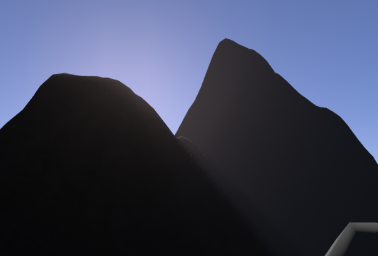

最近在学习实时渲染的常见技术。这里用自己的语言整理一下最近阅读和实现的实时大气渲染方法，主要参考《A Scalable and Production Ready Sky and Atmosphere Rendering Technique》和《Precomputed Atmospheric Scattering》两文。
大气散射模型
我们把大气散射模型建立在对“星球”这一概念的近似上。星球大致是一个半径为的球体，在此基础上通过一个高度场来描述地表起伏。在地表以外、半径小于（显然）的空间中存在着非均匀的大气层。由于大气中的空气折射率随着位置的不同而不同，光线穿过大气层时会弯曲，这在实时渲染中很难模拟，因而本文忽略光线的偏转现象。
渲染方程
对介质中或物体表面的某个位置，从向方向传输的辐射亮度（radiance）由下述渲染方程给出：
其中；是介质的相函数（phase function）；是物体表面的BSDF；表示之间的透射率（transmittance），其定义为：
为介质散射系数，为介质衰减系数。更多关于此渲染方程的相关内容可见文介质渲染，这里只是回顾一下符号，不再赘述。
Rayleigh
在大气层中，空气分子带来的散射可以用Rayleigh theory近似描述：
其中，是位置的海拔高度（与球心的距离减去球面半径），是波长，是空气折射率，是海平面处的空气分子密度，表示，是一个与大气性质相关的常数。
Mie
除了Rayleigh散射外，大气中还存在小颗粒（气溶胶，小水珠等）带来的散射与吸收现象，由Mie theory近似描述：
其中是相函数的非对称因子；均为常数。
Ozone
臭氧层对地球大气层外观也有较大的影响，当太阳靠近地平线时，是臭氧的吸收效应使得天空的大部分区域呈现为蓝色。在本文中，其吸收率由下式近似表示：
汇总
在实时渲染中，我们不可能逐波长地去计算光的散射，而是采用RGB三个分量对光谱上的能量分布进行了近似，故参数也只能进行取定为某个值，记作。由此，我们在计算大气散射时使用的以及为：
拆解和近似
透射率
透射率描述了一束光从点传播到点后，尚未被吸收或衰减的辐射亮度比例。仅与和的位置有关，和地形无关，因此，我们可以在假定星球上没有任何凸起（即所有地表到球心的距离都是）的情况下讨论的计算。
对大气层中的某一点和某个方向，我们总是可以通过刚体坐标变换将点变换到球心的正上方，且位于平面上。此时，设是射线与大气层外侧边缘或地表的最近交点，则仅依赖于两个标量：以及在平面上的角度：

我们将这一信息记录在预计算的表格中。对大气中的任意两点，都可以根据这个表格计算出来：

零散射项

设想从大气中某一点向发射一条射线，正好可以命中太阳，那么无疑包含了从太阳直接发出的光。这部分辐射亮度可以由下式给出：
其中，是从太阳表面出发的辐射亮度。可以通过在天空中单独绘制一个表示太阳的“圆盘”来添加，因此和其他的部分几乎没有实现上的耦合。
单次散射项

所谓单次散射，是指光自光源出发以来仅经过了一次介质散射后就进入了观察者的眼睛。大气层的散射率不高，因此我们观察到的光的大部分能量都来自单次散射光线。记单次散射的辐射亮度为，那么：
其中表示点方向上太阳的可见性（取值为0或1）。如果我们做一个简化，假设太阳在这里可以被视为一个理想方向光，被替换为，那么上式可以简化为：
在实现中，可以通过Shadow Mapping技术求出，外层积分则在ray marching过程中近似计算，也在ray marching时一并求出：
单次反射项

单次反射项是指从太阳出发，仅在地表反射一次，然后就进入观察者眼中的光。和之前一样，我们假设太阳光是方向光。记单次反射项为，从点往方向观察到的地面点为，地表BSDF为，那么：
多次散射项

多次散射项确实比较难算，我们先引入几个简化：
- 对使用path tracing算法产生的ground truth观察可知，当散射次数增加时，相函数的非对称性对结果的影响会迅速下降，表现得越来越趋近于各向同性的相函数（即），据此，我们在计算二次及以上次数的大气散射时，均可以尝试把相函数替换为。
- 多次散射时的光线路径很难用像Shadow Mapping那样的技术来快速判定散射点之间的可见性，再考虑到这些路径遍布整个大气层，通常不会被遮挡得很严重，不妨在计算多次散射时忽略可见性函数，即假设的值总是1。
- 忽略地面反射在多次散射中的贡献。
对大气层中的某一点，下式描述了处恰好经过两次散射后的内散射（in-scattering）项：
对应地，三次散射项为：
这里忽略了地面在多次散射中贡献的能量。四次散射项、五次散射项等均可以通过与上式相似的公式计算，只需要把其中的对应地替换为即可。
根据多次散射结果在空间中非常低频的特性，我们假设等在点的周围的取值可以被近似为等，于是积分内部的可以被近似为，并提到外面来：
这个近似有个很大的槽点——虽然说在空间中确实变化缓慢，但将其视为一个常量也只应局限于某个小范围内；而上式中，可能有非常大的值，其对应的点离点有数百公里也是很正常的，将这样的处的也近似为，我只能说效果好就必有其合理性了……
现令：
那么。然后把上面的多次散射项都加起来：
由于忽略了地表起伏产生的遮蔽，根据球体的对称性，中的实质上可以被简单地参数化为的海拔高度。再加上另一个参数——太阳光的方向相对于的角度，我们就得到了另一张二维查找表。输入的海拔高度和太阳角度，就能从表中查得单位太阳光强度下处的。
当然，我们不一定需要这么多近似才能计算出——在忽略地貌起伏的前提下，我们不需要略去地面反射，也不用假设在局部可被当作常量，就可以用path tracing精确地计算出来。但上述方法提供了一种快速产生的技术，使得实时编辑大气参数成为了可能。
汇总
综上所述，可由下式计算：
其中太阳本身作为一个“圆盘”，可以在大气绘制完成之后单独叠加上去；地表反射项可以在绘制地表时计算，单次散射和多次散射则需要通过一个ray marching过程计算。此外，有的透射率项被写成，表示它的值通过查表获得，而有的则被保留成的形式，这表示它的值是在ray marching时累积得到的。
实现
我用C++和DirectX 11实现了本文所述的大气渲染模型，代码仓库位于AtmosphereRenderer。
天空纹理
由于天空颜色分布比较低频，可以计算一个低分辨率的天空纹理，然后在渲染时采样它，以此提高性能。在靠近地平线的角度，天空的颜色变化往往会比其他区域要剧烈一些，因此可以通过调整天空纹理坐标和方向的关系来改善其效果，譬如：
其中是方向向量与水平面的夹角。这个纹理只需要在太阳角度改变时重新计算，其计算代价也不高，即使每帧进行也不会带来很严重的负担。典型的天空纹理如下图所示：
空气透视表
在渲染场景中的物体时，我们需要从摄像机到物体表面进行ray marching，以计算这段路径上的积分。为了提高效率，可以预先将摄像机视锥体划分为一个较低分辨率的三维表格，然后填充每个表项对应的位置与摄像机之间的透射率和内散射积分。在渲染场景中的物体时，直接查表即可。
在考虑了遮蔽项（）时，如果表格的分辨率太低，其中的体积阴影容易产生“锯齿感”，如下图：

提高的分辨率自然可以改善这一现象，但要将其完全掩盖，需要相对较高的分辨率，这会带来不小的计算开销。因此，我们退而求其次，抖动的采样点位置来掩盖锯齿。依照屏幕空间的蓝噪声将每个采样点在一定范围内随机抖动可得：

这把锯齿状的artifact转化成了噪声，更容易被人眼忽略。
效果图


调整大气参数可以观察到一些信息：
- 在自然情形下，除非有比较强的雾/霾，否则地形遮蔽产生的体阴影应该是很难看出来的（我是没在现实中见到过）。可以把阳光调得更亮或削减大气层的厚度会使得体积阴影显得更为明显
- 太阳周围那一圈灰白色的光晕主要是Mie散射带来的
- Rayleigh散射是大气颜色的主要决定者。白天散射蓝光较多，使得天空呈蓝色；黄昏/日出时光路变长，蓝光更多地被散射到其他方向上了，于是太阳附近呈橙色
- Ozone吸收会使得天空更加偏向蓝色，在黄昏/日出时尤为明显
性能
渲染质量和耗时之间存在tradeoff，这里仅以我自己认为视觉质量可以接受的参数做性能测试。在GTX 1060上，用Nsight Graphics测得的数据如下：
- 天空纹理（64 * 64分辨率）：0.03~0.04 ms
- 空气透视表（无体阴影，64 * 64 * 32分辨率，积分步数32）：0.03 ms
- 空气透视表（有体阴影，200 * 150 * 32分辨率，积分步数32）：0.2 ms
其他渲染阶段只是查这两个表，比如渲染地形时查空气透视表，或者把天空纹理铺到屏幕上等等，它们的性能消耗主要不在大气系统上，故不进行测试。
在启用地形遮蔽造成的体阴影时，空气透视表的分辨率过低会产生严重的artifact，因此需要适当提高其分辨率，并且在光线步进过程中需要频繁读取太阳对应的shadow map，因此其性能相比无体阴影的版本会大幅下降。
不足
- 需要path tracing产生reference，以判断结果的正确性和衡量误差。
- 没有考虑星球尺度的渲染，代码都是以摄像机在大气层内为假设而编写的，因此把摄像机抬高到大气层之外时效果会暴毙